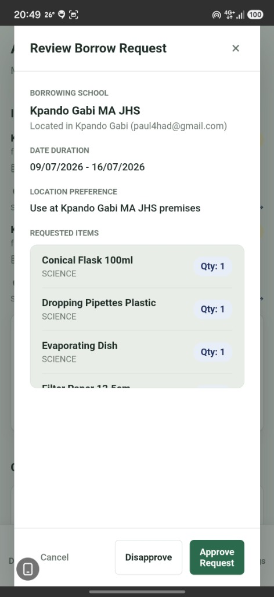
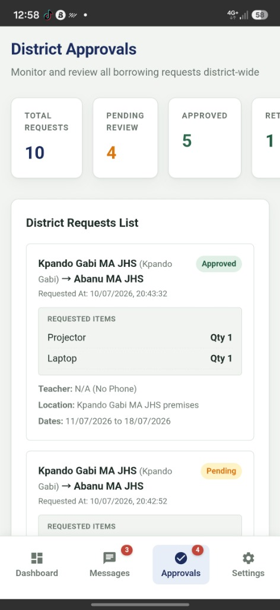
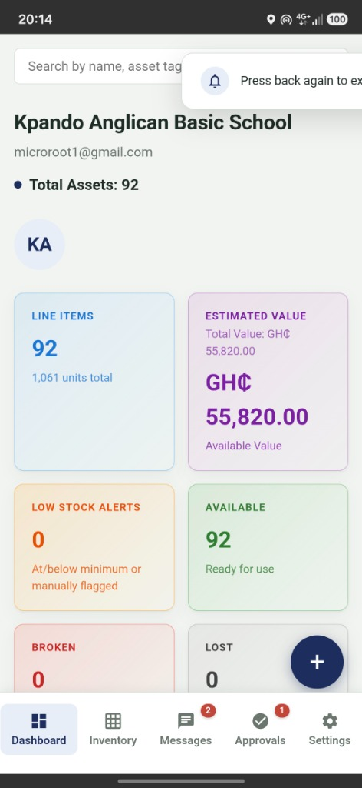
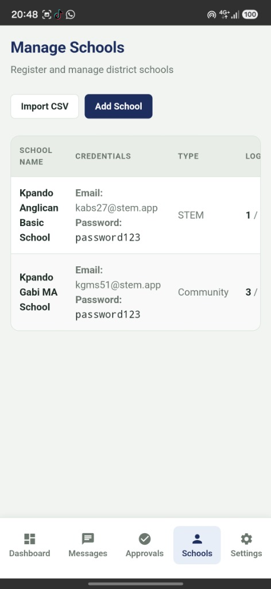
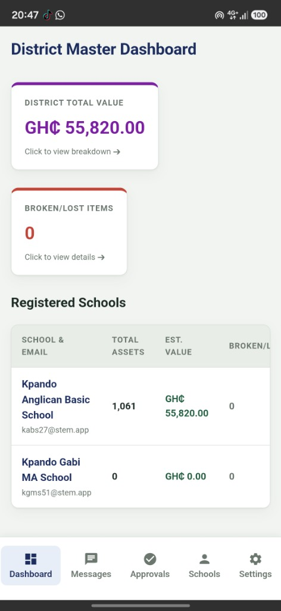

Flawlex STEM Equipment Ledger

The Challenge
In many educational districts, distributing and tracking expensive STEM and science equipment is a logistical nightmare. Schools frequently borrow items like microscopes, conical flasks, and projectors from one another or from a central district repository. However, keeping track of where these items are, who approved the transfer, and the current condition of the equipment was entirely paper-based.
This lack of visibility led to misplaced items, hoarding of broken equipment, and unequal access to crucial learning tools. We needed a digital transformation—a unified system that could give district administrators a top-down view of all assets while empowering individual schools to easily manage their inventory and request items from neighboring schools.

A District-Wide Solution
We built the Flawlex STEM Ledger to act as the central nervous system for educational asset management. The platform features a District Master Dashboard that provides a real-time, birds-eye view of the total value of equipment across the entire district. Administrators can instantly see which schools have the most assets and identify broken or lost items that need replacing before the next academic term.
The mobile companion app was designed specifically for on-the-go teachers and administrators. Using the Manage Schools module, district officials can easily onboard new community and STEM schools, generate secure credentials, and import existing asset lists via CSV. This completely removes the friction of transitioning from paper ledgers to a digital system.

School-Level Granularity
At the individual school level, the app acts as a powerful localized inventory tracker. Headmasters and science teachers can log in to view their specific dashboard, breaking down their total assets into clear categories: Science, IT, Mathematics, and Engineering.
The interface immediately flags low stock alerts and highlights items that are broken or under maintenance. By color-coding these statuses, teachers can quickly assess if they have the required 92 line items ready for tomorrow's chemistry practical, or if they need to initiate a borrowing request. The clean, card-based UI ensures that even those with minimal technical training can manage complex inventories effortlessly.

Streamlining Borrowing Requests
One of the most revolutionary features of the ledger is the inter-school borrowing system. When Kpando Gabi MA JHS needs a projector and a laptop for a special presentation, they no longer have to make a dozen phone calls. They simply submit a request through the app to neighboring Abanu MA JHS.
The District Approvals hub allows authorities to monitor and review all borrowing requests district-wide. They can track pending reviews, view approved transfers, and monitor returned items. This creates a transparent, accountable chain of custody. If a piece of equipment goes missing, the system knows exactly which school had it last and when it was supposed to be returned.

Secure and Accountable
Every borrowing request is detailed and requires strict verification. The app captures the exact date duration (e.g., 09/07/2026 - 16/07/2026), the location preference where the items will be used, and a line-item breakdown of the requested materials (Conical Flasks, Pipettes, Evaporating Dishes).
Administrators can review these detailed requests and click a simple "Approve" or "Disapprove" button. By digitizing this workflow, the STEM Equipment Ledger ensures that valuable educational resources are fully utilized across the district rather than sitting idle in a single cupboard, maximizing the impact of every cedi invested in STEM education.
Key Features
District-Wide Tracking
Top-down visibility of all assets and their financial value across multiple schools.
Inter-School Borrowing
Digital request and approval workflow for sharing equipment between institutions.
Real-Time Alerts
Automated flagging for low stock, broken items, or overdue borrowed equipment.
CSV Import/Export
Seamless migration of existing paper ledgers into the digital database.